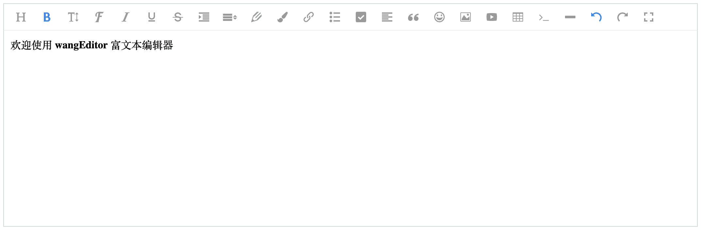

介绍
wangEditor —— 轻量级 web 富文本编辑器，配置方便，使用简单。
- 官网：www.wangEditor.com
- 文档：doc.wangEditor.com
- 源码：github.com/wangeditor-team/wangEditor （欢迎 star）

（如想继续使用 V3 版本，可参考这里）
demo
在线体验 demo 可到 codepen.io/collection/DNmPQV 。
注意，如果打不开，可以去查看 github examples 的源码。
浏览器兼容性
兼容常见的 PC 浏览器：Chrome，Firefox，Safari，Edge，QQ 浏览器，IE11。
不支持移动端。
基本使用
NPM
npm i wangeditor --save
安装后几行代码即可创建一个编辑器：
import E from "wangeditor";
const editor = new E("#div1");
editor.create();
CDN
<script type="text/javascript" src="https://unpkg.com/wangeditor/dist/wangEditor.min.js"></script>
<script type="text/javascript">
const E = window.wangEditor
const editor = new E('#div1')
// 或者 const editor = new E(document.getElementById('div1'))
editor.create()
</script>
更多使用方法，可参考开始使用，或者看左侧目录。
交流
加入 QQ 群
- 164999061（人已满）
- 710646022（人已满）
- 901247714
提交 bug 或建议
- github issues 提交问题
贡献代码
欢迎非团队成员贡献代码，提交 Pull Request，请一定参考 贡献代码流程。
开发人员
- 王福朋 - wangEditor 创始人，资深前端工程师，PMP，曾就职于百度、滴滴
- 太阳 - 佛系前端工程师~
- 刘威 - 我已经想到了一个完美实现 execCommand api 的方法可是这里太小写不下。
- 童汉 - 星火世传 奋飞不辍
- 李春淋 - 只要不放弃努力和追求，小草也有点缀春天价值。
- 郑温剑 - 放弃很容易，但是坚持会更酷。
- 方智聪 - 翠林
- 张超
- bella
- 罗超 - 天才就是百分之一的灵感加上百分之九十九的努力。
- haha
- 李宁 - 一切皆有可能。
- 饶思羚
- 雷
想加入 wangEditor 研发团队，可申请加入 QQ 群，然后私聊群主。